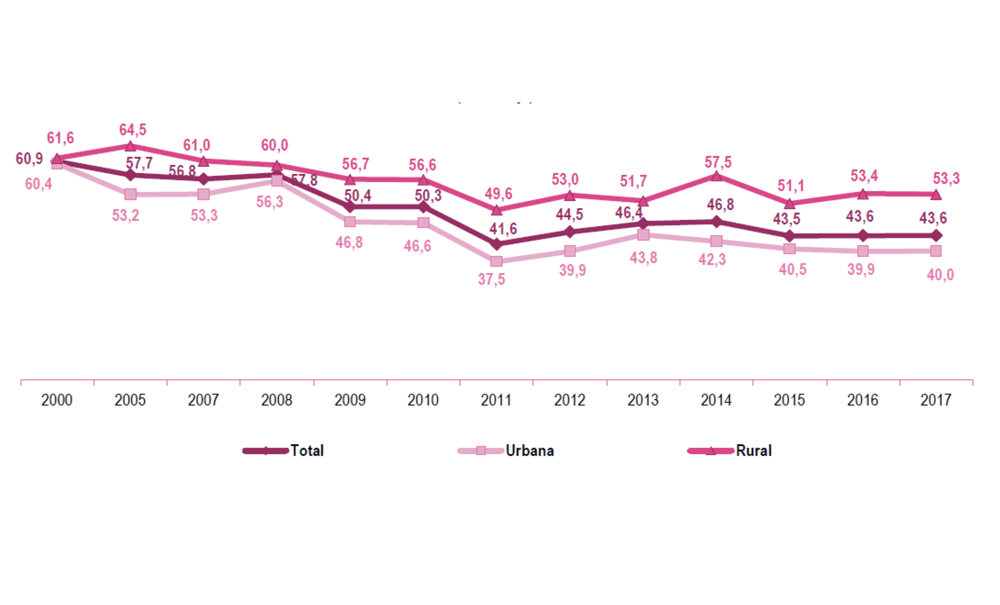

Impactos de la anemia
La anemia por deficiencia de hierro es uno de los principales problemas de salud pública en el Perú. “Actualmente en el Perú el 43.5% de los niños, de 6 a 35 meses, sufre de anemia, correspondiéndole a la zona rural el 51.1% y a la urbana el 40.5%. Estamos hablando de 620 mil niños menores de 3 años anémicos de 1.6 millones a nivel nacional y de 410 mil niños menores de 5 años que presentan desnutrición crónica” (Minsa, 2017).
La anemia tiene efectos negativos en el desarrollo cognitivo, motor, comportamiento y crecimiento durante los primeros años de vida. Durante el embarazo, está asociada a elevadas tasas de mortalidad materna, de mortalidad perinatal, al bajo peso al nacer y a la mortalidad neonatal. A su vez, tiene consecuencias negativas en los logros educativos y el desarrollo del capital humano, en la productividad y calidad de vida de los peruanos en el futuro. De esta manera, la anemia en los niños pequeños y la gestación tendrá una repercusión negativa enorme en el desarrollo del país (Balarajan, 2011).
Es en este sentido que se implementa el “Plan Nacional para la Reducción y Control de la Anemia Materno Infantil y la Desnutrición Crónica Infantil en el Perú: 2017-2021”, que busca reducir la anemia de 43% a 19% en el período de tiempo indicado.
| Indicador | 2016 | 2017 | 2018 | 2019 | 2020 | 2021 |
|---|---|---|---|---|---|---|
| Tasa de Desnutrición Crónica (menores de 5 años, OMS) | 13.1% | 13.0% | 11.4% | 9.7% | 8.1% | 6.4% |
| Tase de anemia en niñas y niños de 6 a 36 meses de edad | 43.6% | 37.9% | 33.2% | 28.5% | 23.8% | 19% |
Tabla de metas de reducción de Anemia y Desnutrición Crónica Infantil al 2021 (Instituto Nacional de Estadística e Informática. ENDES – 2016)
En la nutrición
La Malnutrición se refiere a las carencias, los excesos y los desequilibrios de la ingesta calórica y de nutrientes de una persona. Abarca tres grandes grupos de afecciones: La desnutrición; la malnutrición relacionada a los micronutrientes; y sobrepeso, obesidad y enfermedad no transmisibles relacionadas con la alimentación.
| Indicador/ Área de Residencia | 2009 | 2010 | 2011 | 2012 | 2013 | 2014 | 2015 | 2016 | 2017 |
|---|---|---|---|---|---|---|---|---|---|
| Niños menores de cinco años de edad con desnutrición crónica (Patrón OMS) | 23.8 | 23.2 | 19.5 | 18.1 | 17.5 | 14.6 | 14.3 | 13.1 | 12.9 |
| Área urbana | 14.2 | 14.1 | 10.1 | 10.5 | 10.3 | 8.3 | 9.1 | 7.9 | 8.2 |
| Área rural | 40.3 | 38.8 | 37.0 | 31.9 | 32.3 | 28.8 | 27.7 | 26.5 | 25.3 |
| Niños menores de cinco años de edad con desnutrición crónica (Patrón NCHS) | 18.3 | 17.9 | 15.2 | 13.5 | 13.1 | 10.7 | 10.0 | 9.3 | 9.1 |
| Área urbana | 9.9 | 10.1 | 7.4 | 7.3 | 7.1 | 5.8 | 6.1 | 5.3 | 5.4 |
| Área rural | 32.8 | 31.3 | 30.0 | 24.6 | 25.3 | 21.9 | 20.5 | 19.5 | 19.2 |
Tabla porcentual de la Desnutrición Crónica en el Perú según el patrón OMS y NCHS (Endes – 2017)
En niños y mujeres
Al 43.6% de niños de 6 a 35 meses de edad, residentes en Perú, se le detectó anemia en el año 2017. Esta proporción fue menor a la observada en el años 2012 (44.5%). Según el área de residencia, la anemia fue más frecuente entre niños residentes en el área rural (53.3%). En el área urbana, este porcentaje correspondió a 40.0% (INEI, 2017).
El 21.0% de las mujeres de 15 a 49 años de edad padecía de algún tipo de anemia, proporción mayor en 3.3 puntos porcentuales al valor reportado en el año 2012 (17.7%). Las mujeres embarazadas fueron las más afectados (29.6%); siguen las mujeres que tuvieron 6 a más hijos nacidos vivos (24.9%), las mujeres que están dando a lactar (23.3%); y aquellas que residen en las regiones de Lima Metropolitana (23.1%) y la Selva (22.9%) Según su área de residencia, el porcentaje fue mayor en el área rural (21.1%) que en el área urbana (20.9%) (INEI, 2017)
Evolución de la anemia en niños de 6 a 35 meses de edad, según área de residencia, 2000-2017
En la mortalidad infantil
Se estima que entre 1941 y el 2005 poco más de 1.7 millones de menores de cinco años habrían muerto por causas asociadas a la desnutrición. Considerando las tases de sobrevida de las distintas cohortes a lo largo de todo el período, el 81% (1.38 millones de personas) se encontraría aún vivo en el 2005, si no hubiese sufrido desnutrición global.
| Período | Número de menores fallecidos |
|---|---|
| 1941 - 1950 | 193 396 |
| 1951 - 1960 | 248 677 |
| 1961 - 1970 | 299 455 |
| 1971 - 1980 | 297 605 |
| 1981 - 1990 | 198 493 | 1991 - 2000 | 106 501 | 2001 - 2005 | 38 294 |
Muertes infantil por desnutrición entre 1941-2005 (Ministerio de la Mujer y Desarrollo Social, PMA y Cepal, 2008)
Como se desprende del cuadro, entre 1951 y 2005, la desnutrición habría sido la responsable de la muerte de 1,150,730 menores de cinco años que para la fecha actual tendrían entre 10 y 67 años aproximadamente, y por tanto formarían parte de la Población en edad de trabajar (PET). En consecuencia, esto genera un impacto económico en el país.
En los costos en la salud
El costo público y privado en salud estimado para el Perú en el 2005 ascendió a S/. 174 millones, equivalente a US$ 52.7 millones, lo que representa el 4,3% del gasto social en Salud de dicho año y equivale aproximadamente a 5,6 veces el costo asumido por el sistema público asociado con estas patologías.
Costo de la desnutrición global en salud (CEPAL, 2005)
| Edad | Número de casos | Millones de nuevos soles | Millones de dólares (2005) |
|---|---|---|---|
| Recién nacido | 10 815 | 3.4 | 1.0 |
| 28 días a 11 meses | 16 423 | 15,2 | 4.6 |
| 12 meses a 23 meses | 75 013 | 55,6 | 16,9 |
| 24 meses a 59 meses | 184 540 | 99.7 | 30.3 |
| Total | 286 791 | 173.9 | 52.8 |
En la educación
En cuanto al desarrollo cognitivo de los niños, diversos autores demuestran que la anemia provoca deficiencias en el desarrollo cognitivo de los niños, en especial en sus habilidades psicomotrices, cognitivas y de socialización. Se encontró que a los 5 años, los niños que padecieron de anemia durante sus primeros 12 meses de vida tenían en promedio y coeficiente intelectual 5 puntos menor que aquellos que no la padecieron, en relación a esto se describió que a pesar de curarse de la anemia en los primeros 12 meses de vida, el efecto negativo en el desarrollo cognitivo no se revierte.
Pollit (1978 y 1983) encuentra evidencia de que la anemia afecta negativamente la memoria, la atención y la adquisición de conceptos nuevos; sin embargo, luego de recibir tratamiento, los niños revierten el efecto negativo de la deficiencia de hierro en la atención y memoria, mas no en el caso de la adquisición de conceptos nuevos. La anemia influye negativamente en el progreso educativo, reduciendo las capacidades cognitivas de los estudiantes y generando sobrecostos al Estado, pues debe atender a la población estudiantil que repite algún grado a causa del bajo rendimiento producto de la anemia.
| Nivel de educación | Total de años repetidos | Costo operativo por alumno en soles | Costo total |
|---|---|---|---|
| Primaria | 77 283 | 1 580 | 122 107 140 |
| Secundaria | 68 520 | 1 862 | 127 584 240 |
| Total | - | - | 249 691 380 |
En el cuadro anterior, se observa el número de años repetidos de los niños que padecieron anemia y el costo anual por niño que sufraga el Estado peruano. Con esta información, se estima que el costo para el Estado es de casi 250 millones PEN, monto que representa el 3% del gasto total en educación básica que hace el Estado y el 0.06% del PBI.
Tratamiento terapéutico de la anemia en niños de 0 a 35 meses de edad
El Estado peruano también incurre en costos asociados al tratamiento de la anemia entre los niños y las mujeres. La siguiente estimación se elaboró usando el esquema de suplementación sugerido por Drake y Bernztein (2009) en el cual se provee de 3 mg de hierro por kilo de peso al niño a través de la ingesta de sulfato ferroso en jarabe y asumiendo un período de tratamiento de un año, se estimó que el costo en que se debería incurrir para tratar la anemia de los niños que la padecen asciende a poco más de los 15 millones PEN, mientras que el costo por niño llega a los 22 PEN. Obteniendo un total de 17,254,922 PEN.
| Edad (meses) | Población a atender | Costo por niño | Costo total |
|---|---|---|---|
| Tratamiento terapéutico para niños con anemia 0 – 35 meses | 679 231 | 22 | 15 004 280 |
| Costos de gestión (15%) | 2 250 642 | ||
| Total S/. | 17 254 922 |
Costo anual del tratamiento terapéutico de la anemia en niños de 0 a 35 meses de edad (Alcázar, 2012)
Tratamiento terapéutico de la anemia en madres gestantes con anemia
Igualmente, el costo de tratamiento terapéutico de la anemia entre las mujeres gestantes también se estimó utilizando el tratamiento sugerido por Drake y Bernztein (2009), en el que la madre recibe un frasco de 30 tabletas cada mes desde que es captada en un centro de salud hasta el parto y seis meses después de este. Así, el costo para combatir la anemia entre las gestantes que la padecen ascendería a las 4,100,000 PEN. Luego, si se le atribuye que los costos de gestión son del 15%, los costos totales ascienden a 4,700,000 PEN aproximadamente.
| Edad (meses) | Población a atender | Costo por niño | Costo total |
|---|---|---|---|
| Tratamiento terapéutico de las MEF con anemia | 103 625 | 40 | 4 103 550 |
| Costos de gestión (15%) | 615 533 | ||
| Total S/. | 4 719 083 |
Costo anual terapéutico de la anemia en madres gestantes con anemia (Alcázar, 2012)
Costos de la anemia a nivel nacional (Alcázar, 2012)
| Componentes | Pérdia per cápita | Pérdida como porcentaje del PBI per cápita |
|---|---|---|
| Costo por pérdida cognitiva | 69,58 | 0.51% |
| Costo por pérdida de escolaridad | 19,3 | 0,14% |
| Costo por pérdida de productividad | 27,44 | 0,20% |
| Total | 116,14 | 0,86% |
Costo de la anemia en las economías departamentales (Alcázar, 2012)
| Departamento | Costo por perdida cognitiva | Costo por perdida de escolaridad | Costo por perdida de productividad | Total | Prevalencia |
|---|---|---|---|---|---|
| Amazonas | 1,02% | 0,44% | 0,37% | 1,83% | 39% |
| Ancash | 0,37% | 0,16% | 0,14% | 0,67% | 39% |
| Apurimac | 1.07% | 0,46% | 0,43% | 1,95% | 48% |
| Arequipa | 0,57% | 0,25% | 0,19% | 1,01% | 47% |
| Ayacucho | 0,65% | 0,28% | 0,21% | 1,14% | 40% |
| Cajamarca | 0,43% | 0,19% | 0,21% | 0,83% | 30% |
| Cusco | 0,94% | 0,40% | 0,32% | 1,66% | 62% |
| Huancavelica | 0,59% | 0,25% | 0,22% | 1,07% | 50% |
| Huanuco | 1,09% | 0,47% | 0,33% | 1,89% | 43% |
| Ica | 0,35% | 0,15% | 0,16% | 0,67% | 31% |
| Junin | 0,84% | 0,36% | 0,35% | 1,54% | 46% |
| La Libertad | 0,59% | 0,25% | 0,26% | 1,11% | 37% |
| Lambayeque | 0,37% | 0,16% | 0,17% | 0,70% | 23% |
| Lima | 0,42% | 0,18% | 0,17% | 0,77% | 30% |
| Loreto | 0,61% | 0,26% | 0,19% | 1,06% | 35% |
| Madre de Dios | 0,68% | 0,29% | 0,27% | 1,24% | 39% |
| Moquegua | 0,30% | 0,13% | 0,09% | 0,51% | 43% |
| Pasco | 0,50% | 0,22% | 0,19% | 0,91% | 53% |
| Piura | 0,44% | 0,19% | 0,22% | 0,85% | 30% |
| Puno | 0,96% | 0,41% | 0,36% | 1,72% | 54% |
| San Martin | 0,56% | 0,24% | 0,24% | 1,05% | 22% |
| Tacna | 0,45% | 0,19% | 0,14% | 0,78% | 36% |
| Tumbes | 0,67% | 0,29% | 0,27% | 1,22% | 34% |
| Ucayali | 1,13% | 0,48% | 0,31% | 1,92% | 52% |